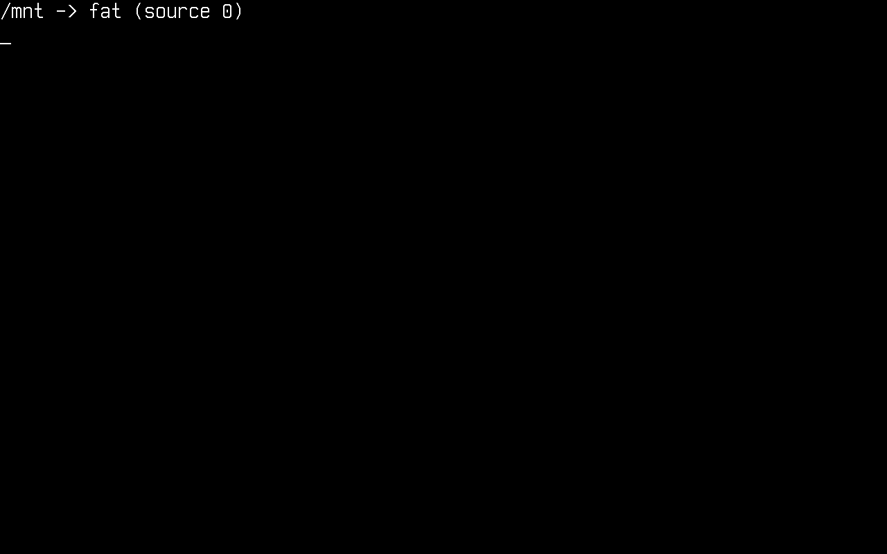
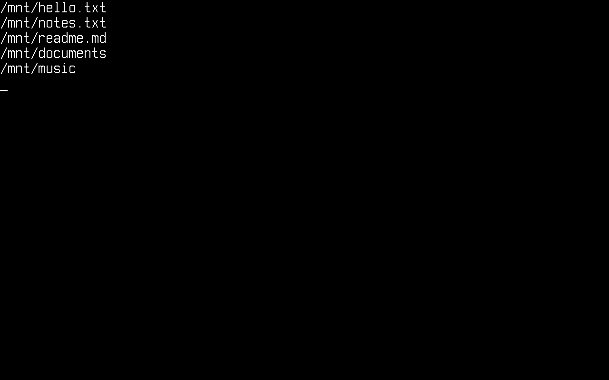

文件系统
本文将介绍 Cosmos Gen3 上的磁盘和文件：为内核提供磁盘、在磁盘上挂载文件系统、读取 CD-ROM 和 ISO 镜像、为磁盘分区并格式化，以及在卷挂载之后操作文件。
读写文件不需要任何 Cosmos 专用的 API。Gen3 原样运行标准的 .NET System.IO（File、Directory、FileStream、StreamReader、FileInfo 等等），由内核来响应它在 Linux 上会发出的系统调用。Cosmos 负责的是在此之前的那一步：你的内核注册一个文件系统驱动程序，并把一个卷挂载到 /mnt 这样的 Unix 风格路径上，此后 /mnt 下的每个路径都由该驱动程序提供服务。
如果你是从 Gen2 过来的，主要区别如下：
| Gen2 | Gen3 | |
|---|---|---|
| 路径 | DOS 驱动器号（0:\file.txt） |
Unix 路径（/mnt/file.txt） |
| 初始化 | CosmosVFS + VFSManager.RegisterVFS |
VfsManager.RegisterFileSystem + VfsManager.TryMount |
| API 面 | 经 plug 实现的 System.IO 子集 |
完整的 System.IO（流、枚举模式、FileInfo 等） |
File.Move |
没有 plug（先复制再删除） | 可用，并且可以覆盖已有的目标 |
| 文件系统 | FAT32（FAT12/16 部分支持）、ISO 9660 | FAT12/16/32、ext2、带 Rock Ridge 的 ISO 9660（只读） |
| ISO 上的文件 | 项目中的 isoFiles 文件夹 |
同样的 isoFiles 文件夹，外加 CosmosIsoFile 项（在启动 ISO 上随附文件） |
请先在虚拟机中尝试。分区和格式化会直接写入磁盘，既不需要确认，也无法撤销，因此在真实硬件上，一个错误的扇区偏移就会毁掉磁盘上原有的一切。cosmos run 交给 QEMU 的是一个可以随手丢弃的磁盘镜像，VMware 或 VirtualBox 的虚拟磁盘也同样可以随时丢弃。
警告：请不要在真实硬件上尝试！这可能对你的数据造成无法挽回的损害。请使用虚拟机（通过 cosmos run 运行的 QEMU、VMware、VirtualBox 等）。
请在 Cosmos 中用本页介绍的调用为内核的磁盘分区和格式化，而不要用 Parted 或 fdisk。Cosmos 是在它自己布局的磁盘上测试的，而主机上的工具可能以这些测试从未覆盖的方式来布局磁盘。
如果你发现 bug 或任何异常，请在我们的仓库中提交 issue。
在内核中启用存储
存储支持由一个功能开关控制。请确保内核的 .csproj 没有将其关闭（默认值为 true）：
<PropertyGroup>
<CosmosEnableStorage>true</CosmosEnableStorage>
</PropertyGroup>
开关打开时，内核会在启动过程中初始化它的存储驱动程序，并把这些驱动程序找到的每个磁盘交给 StorageManager。管理器把这些磁盘列在 StorageManager.Devices 中，读取每个磁盘的 MBR 或 GPT 分区表，再把找到的分区列在 StorageManager.Partitions 中，这一切都发生在内核的 BeforeRun() 运行之前。每个磁盘都有一个名称，启动日志和 IBlockDevice.Name 显示的就是它：
| 磁盘 | 名称 | 在 QEMU 中的附加方式 |
|---|---|---|
| 位于 AHCI 控制器之后的 SATA 磁盘 | sata0、sata1…… |
cosmos run --disk disk.img |
| NVMe 命名空间 | nvme0n1…… |
cosmos run --disk disk.img,nvme |
| virtio-blk 磁盘 | vblk0…… |
cosmos run --disk disk.img,virtio-blk（在 arm64 上为 virtio-blk-mmio） |
| U 盘 | usb0、usb1…… |
cosmos run --disk disk.img,usb |
| 位于 AHCI 控制器之后的 CD-ROM 光驱 | cdrom0…… |
无需附加：在 x64 上，cosmos run 就是从这样一个光驱启动的 |
U 盘还需要 CosmosEnableUsb，只要 CosmosEnableStorage 开启，它的默认值就是 true。把它设为 false 会去掉 USB 主机控制器驱动程序，U 盘也随之消失，而其他磁盘仍然保留。
要在 QEMU 中为内核提供磁盘，请为每个驱动器创建一个镜像，并把每个镜像连同上表中它的种类一起传给 cosmos run（不带种类的镜像就是 SATA 磁盘）：
$ qemu-img create disk.img 64M
$ qemu-img create stick.img 64M
$ cosmos run --disk disk.img --disk stick.img,usb
刚由 qemu-img create 创建的镜像是空白的：它既没有分区表也没有文件系统，因此内核会列出这个磁盘，却在上面找不到任何分区。在挂载之前，请先在内核中写入分区表并格式化一个分区，做法见为磁盘分区和格式化分区。
哪个磁盘排在最前
StorageManager.PrimaryDevice 是 Devices 的第一个条目，管理器让这个列表保持固定的顺序，而不是按磁盘就绪的先后排列，因此主设备不取决于哪个驱动程序先完成。驱动程序找到的磁盘排在最前，按驱动工具包在其上找到它们的那个设备的总线和地址排序，这样 SATA 或 NVMe 磁盘（pci:）排在 U 盘（usb:）之前，U 盘又排在 virtio-blk 磁盘（virtio:）之前。随后是内核自己用 StorageManager.RegisterDevice 注册的磁盘，按注册顺序排列。CD 这样的只读介质排在最后，因此只要机器上有可以格式化的磁盘，主设备就是这样一个磁盘。
这种顺序有一个需要预先考虑的后果：后到的磁盘会插到它在顺序中应在的位置，而不是排到列表末尾。在已接有 virtio-blk 磁盘时插入的 U 盘会排到它前面，virtio-blk 磁盘的每个分区在 StorageManager.Partitions 中都会向后移。这就是本页挂载的是一个 Partition，而不是该列表中的某个索引的原因。
可随时插拔的磁盘
U 盘，以及位于 PCI Express 热插拔插槽之后的 virtio-blk 磁盘，可以在内核运行时插入和拔出。插入的磁盘会像启动时找到的磁盘一样被注册和扫描，名称取空闲的编号最小的 usbN 或 vblkN。
拔出的磁盘会离开 Devices 和 Partitions，它上面的挂载也随之而去。通过 TryMount 的 Partition 重载（见下文）建立的挂载会在不刷新的情况下被分离，因为磁盘已无法再接受写入，所以在拔出写入过的磁盘之前，请先调用 VfsManager.TryUnmount。由源字符串建立的挂载并不指向任何磁盘，因此它会留在挂载表中。无论哪种情况，仍在该磁盘上打开的文件都会在下一次读写时失败，抛出驱动程序的 IOException（USB 大容量存储驱动程序抛出 "USB device detached"，virtio-blk 驱动程序抛出 "virtio-blk device detached"，NVMe 驱动程序抛出 "NVMe device detached"），或者在工具包释放了驱动程序的内存之后抛出 InvalidOperationException。
磁盘接入或移除时，驱动工具包的一个线程会整体替换这两个列表，因此你持有的列表永远不会在你手中发生变化，但再次读取该属性可能得到一个更新的列表。请只读取一次 Devices 或 Partitions，然后对这份副本进行索引。
要在 QEMU 中尝试，请至少带一个 usb 磁盘启动：第一个这样的磁盘会为机器提供 xHCI 控制器 usbxhci0，而这个控制器的名称就是你从 QEMU 监视器（在 QEMU 窗口中按 Ctrl+Alt+2）插入另一个 U 盘时所用的总线。--usb-controller ehci 或 ehci-ohci 会改为放置一个 EHCI 控制器 usbehci0，ohci 则放置一个 OHCI 控制器 usbohci0；这两种控制器都会把每个 USB 设备固定到自己的某个根端口上：
(qemu) drive_add 0 if=none,id=stick,file=stick.img,format=raw
(qemu) device_add usb-storage,drive=stick,id=stick,bus=usbxhci0.0
(qemu) device_del stick
注册文件系统驱动程序并挂载
在文件系统驱动程序读取它之前，分区只是一段扇区。Cosmos 随附三个驱动程序，每个一个命名空间：FAT（FAT12、FAT16 和 FAT32）、ext2 和 ISO 9660。你的内核以自己选择的名称注册需要的驱动程序，然后用其中一个把分区挂载到挂载点上。
下面的代码片段依赖以下 using：
using System.IO;
using Cosmos.Kernel.HAL.Devices.Storage;
using Cosmos.Kernel.System.FileSystem;
using Cosmos.Kernel.System.FileSystem.Fat;
using Cosmos.Kernel.System.Storage;
Cosmos.Kernel.System.FileSystem 就是 VFS 本身：VfsManager、挂载表的表项（VfsMount）、挂载或 stat 调用所用的标志和元数据类型（MountFlags、VfsMode、VfsStat、VfsStatFs），以及文件系统驱动程序要实现的接口。这就是 MountFlags.None 不需要单独的 using 的原因。驱动程序位于下一级：FatFileSystemType 和 FatFormatOptions 在 Cosmos.Kernel.System.FileSystem.Fat 中，Ext2FileSystemType 在 Cosmos.Kernel.System.FileSystem.Ext2 中，Iso9660FileSystemType 在 Cosmos.Kernel.System.FileSystem.Iso9660 中。StorageManager 和分区相关的类型在 Cosmos.Kernel.System.Storage 中，而 Cosmos.Kernel.HAL.Devices.Storage 只是为了 IBlockDevice 才出现在这里：它是磁盘的类型，下文的 RAM 磁盘实现了它，分区代码片段也持有它。
注册 FAT 驱动程序，然后把第一个分区挂载到 /mnt。这段代码放在内核的 BeforeRun() 中：
FatFileSystemType fat = new();
if (!VfsManager.RegisterFileSystem("fat", fat))
{
Console.WriteLine("The name \"fat\" is already registered.");
return;
}
if (StorageManager.Partitions.Count == 0)
{
Console.WriteLine("No partitions found.");
return;
}
if (VfsManager.TryMount("fat", StorageManager.Partitions[0], MountFlags.None, "/mnt", out VfsMount? mount))
{
Console.WriteLine("Mounted " + mount.Name + " partition " + mount.Source + " at " + mount.MountPoint);
}
else
{
Console.WriteLine("No FAT volume on the first partition.");
}
这些调用都通过返回值而不是异常来报告拒绝：RegisterFileSystem 拒绝已被占用的名称，TryMount 拒绝驱动程序在其上找不到卷的分区。读取本身失败的磁盘仍会抛出其驱动程序的异常。存储被编译排除时，或者没有任何磁盘带有分区表或 FAT 卷、光驱中也没有 CD 时，Partitions 是空的，这就是代码片段先检查 Count 再进行索引的原因。在 x64 上，cosmos run 从一张内核同样会列出的 CD 启动，因此当附加的磁盘都没有分区时，第一个条目就是这张 CD，而 FAT 驱动程序在上面找不到卷。
StorageManager.GetPartitions(device) 给出单个磁盘的分区，编号方式与用户的习惯一致，而 Partitions 是跨所有磁盘的扁平列表。
TryMount 也接受字符串形式的源，例如 VfsManager.TryMount("fat", "0", ...)，每个驱动程序以自己的方式解读它：FAT 驱动程序把它解读为 StorageManager.Partitions 中的索引。请优先使用 Partition 重载。索引指向的是恰好位于该位置的分区，而创建或删除分区，或者磁盘的接入和移除，都会让分区挪动位置。

从这里开始，/mnt 下的一切都由 FAT 驱动程序提供服务。
根目录 / 不是一个卷。即使什么都没有挂载，它也存在，枚举它会列出各个挂载点，但直接在其中创建文件会以 IOException（只读文件系统）失败，因为那里没有驱动程序来存储文件。请在 /mnt 这样的挂载点下创建文件。
在 RAM 磁盘上尝试
做快速实验时，你根本不需要磁盘镜像。块设备就是任何实现了 IBlockDevice 的东西，一个以数组为后备的块设备只需几行代码：
internal sealed class MemoryBlockDevice : IBlockDevice
{
private readonly byte[] _storage;
public MemoryBlockDevice(string name, ulong blockSize, ulong blockCount)
{
Name = name;
BlockSize = blockSize;
BlockCount = blockCount;
_storage = new byte[blockSize * blockCount];
}
public string Name { get; }
public ulong BlockSize { get; }
public ulong BlockCount { get; }
public void ReadBlock(ulong blockNo, ulong blockCount, Span<byte> data)
=> _storage.AsSpan((int)(blockNo * BlockSize), (int)(blockCount * BlockSize)).CopyTo(data);
public void WriteBlock(ulong blockNo, ulong blockCount, ReadOnlySpan<byte> data)
=> data.Slice(0, (int)(blockCount * BlockSize)).CopyTo(_storage.AsSpan((int)(blockNo * BlockSize)));
public void Flush() { }
}
FAT 驱动程序的构造函数可以接受这样的设备。像往常一样注册它，并传入空的 source，因为已经持有设备的驱动程序无需再查找什么，然后格式化该设备并挂载它：
MemoryBlockDevice ramDisk = new("RAMDISK", 512, 65536); // 32 MiB
FatFileSystemType fat = new(ramDisk);
if (!VfsManager.RegisterFileSystem("ramfat", fat)
|| !VfsManager.TryFormat("ramfat", "", new FatFormatOptions { Type = FatType.Fat16 })
|| !VfsManager.TryMount("ramfat", "", MountFlags.None, "/mnt", out _))
{
Console.WriteLine("RAM disk setup failed.");
return;
}
读取 CD-ROM 或 ISO 镜像
光驱在我们的电脑上已经不多见了，它的文件系统却一直活跃着：操作系统至今仍以 .iso 镜像的形式下载，cosmos build 也会把你自己的内核打包成这样一个镜像。Iso9660FileSystemType 位于 Cosmos.Kernel.System.FileSystem.Iso9660 中，它让内核能够读取这样的卷，无论卷是在 CD 上、在写入了镜像的 U 盘上，还是在内存中。
标准本身只认识以版本号结尾的大写名称，例如 HELLO.TXT;1。这就是在 Unix 系统上制作的镜像通常带有 Rock Ridge 扩展的原因，cosmos build 制作的镜像也带有它：Rock Ridge 为每个文件提供它真正的名称 hello.txt，以及它的 Unix 权限、时间戳和符号链接，卷带有这一扩展时，驱动程序会读取所有这些信息。在没有 Rock Ridge 的卷上，文件以去掉版本号的原始标识符出现（README、FILE.TXT），你可以用任意大小写输入这个名称，因为标准在这里只允许大写。驱动程序不读取 Joliet，也就是 Windows 工具添加的长文件名，因此只有 Joliet 的卷同样显示原始标识符。
该驱动程序的挂载方式与 FAT 驱动程序相同，可以从分区挂载，也可以从交给其构造函数的设备挂载，而且它接受任意扇区大小，因此同一个镜像既可以从光驱（2048 字节扇区）挂载，也可以从 U 盘（512 字节扇区）或存放着其字节的 MemoryBlockDevice 挂载。这里的 cdrom 是任何承载着卷的 IBlockDevice，接下来的几段会介绍如何在磁盘中找到光驱：
using Cosmos.Kernel.System.FileSystem.Iso9660;
Iso9660FileSystemType iso = new(cdrom);
if (!VfsManager.RegisterFileSystem("iso", iso)
|| !VfsManager.TryMount("iso", "", MountFlags.None, "/cd", out VfsMount? cd))
{
Console.WriteLine("No ISO 9660 volume there.");
return;
}
Console.WriteLine(cd.IsReadOnly); // True
foreach (string path in Directory.GetFiles("/cd/docs"))
{
Console.WriteLine(path + ": " + new FileInfo(path).Length + " bytes");
}
string text = File.ReadAllText("/cd/hello.txt");
这样的卷大多放在光驱里。当光驱位于 AHCI 模式的 SATA 控制器之后时，内核会以 cdrom0 的名称把它列在 StorageManager.Devices 中，前提是启动时光驱里有光盘：驱动程序只有在光驱中找到光盘时才会初始化它，并且不会监视之后放入的光盘，因此启动时为空的光驱永远不会出现。它与磁盘的区别在于同一个对象上的第二个接口 IRemovableMedia，带有 IsReadOnly、IsRemovable 和 HasMedia。驱动工具包把这样的附加接口称为能力接口（facet）。这个能力接口属于工具包的实验性 API 面，标有 [Experimental("COSMOS0003")]，因此对它做类型测试的内核要在其 .csproj 中用 <NoWarn>$(NoWarn);COSMOS0003</NoWarn> 确认该标识符。随后找到光驱只需对列表做一次循环：
using Cosmos.Kernel.HAL.Devices.Storage; // IBlockDevice, IRemovableMedia
using Cosmos.Kernel.System.Storage; // StorageManager
IBlockDevice? cdrom = null;
foreach (IBlockDevice device in StorageManager.Devices)
{
if (device is IRemovableMedia { IsReadOnly: true })
{
cdrom = device;
break;
}
}
存储管理器不会在 CD 上查找分区表。只读光盘上没有内核可以修改的分区表，而可启动 ISO 开头的保护性 MBR 以 512 字节为单位计数，2048 字节扇区的光驱会读错，因此管理器把整张光盘列为一个分区。它还把光驱排在所有可写磁盘之后，正如哪个磁盘排在最前所说明的，因此在 x64 上（cosmos run 从这样的光驱启动），启动光盘是 Partitions 的最后一个条目，而在没有任何磁盘带有自己的分区时，它是第一个条目。
该卷是只读的，整个 VFS 都知道这一点。无论你挂载时传入什么标志，VfsMount.IsReadOnly 都为 true，VfsMount.Flags 都带有 MountFlags.ReadOnly；每个文件的 FileInfo.IsReadOnly 都为 true；每次写入都像在 Linux 上一样失败，抛出普通的 IOException（"Read-only file system"），而不是暗示文件不存在的异常。
用 MountFlags.ReadOnly 挂载任何驱动程序时，它都会以同样的方式拒绝写入。这个标志属于挂载而不属于卷：VFS 在挂载点上检查它，而不是在驱动程序中。
光盘上有几样东西仍然无法读取。分布在多个 extent 上的文件（ISO 9660 正是这样存储超过 4 GiB 的文件）不会被列出。多会话光盘只读取第一个会话，UDF 则完全不读取。让 CD 可以启动的 El Torito 启动目录也不会被解析：当光盘列出它时，它只是又一个文件。
光驱本身必须是工具包以块设备形式发布的那种，目前这意味着位于 AHCI 模式的 SATA 控制器之后的光驱（存储驱动程序）。QEMU 的 q35 机器正是把它的光驱放在那里，因此由 cosmos run 在 x64 上启动的内核可以读取自己的启动光盘；VMware 在虚拟驱动器接在 SATA 控制器而不是 IDE 控制器上时，也把光驱放在那里。位于 USB、virtio-scsi 或 IDE 控制器之后的光驱还不是块设备，而在 arm64 上，cosmos run 通过 virtio-scsi 附加启动 ISO。那里的内核改为读取镜像：从 RAM、从写入了镜像的磁盘分区，或者从写入了镜像的 U 盘读取，后者整个交给构造函数，写作 new Iso9660FileSystemType(stick)。
在启动 ISO 上随附文件
既然内核可以读取它的启动光盘，ISO 也就成了存放它运行时所需文件的便利之处：配置文件、字体、图片。cosmos build 把内核和 Limine 放在 /boot 和 /EFI 下，并且和 Gen2 一样，内核 .csproj 旁边的 isoFiles 文件夹中的所有内容都会连同其子文件夹一起放到 ISO 的根目录，因此 isoFiles/data/config.txt 在光盘上就是 /data/config.txt。
位于别处的文件，或者需要换一个名称的文件，在 .csproj 中写成 CosmosIsoFile 项。它的 IsoPath 元数据就是它在 ISO 上的路径。以 / 结尾的 IsoPath 表示一个文件夹，并保留文件原来的名称；没有 IsoPath 的文件放在根目录：
<ItemGroup>
<CosmosIsoFile Include="../assets/logo.bmp" IsoPath="images/logo.bmp" />
<CosmosIsoFile Include="../assets/readme.txt" IsoPath="docs/" />
</ItemGroup>
CosmosIsoFilesDirectory 属性让构建改用另一个文件夹。该文件夹中的内容都不参与编译，因此放在里面的 .cs 文件会作为文件随附，而不会被编译进内核。
构建宁可报错停止，也不会写出一个损坏的 ISO。它拒绝会落到 /boot 或 /EFI 之下的文件，因为那里存放着 SDK 写入的内核和引导加载程序。它拒绝含有 . 或 .. 段的 IsoPath，因为 .. 可能爬出 ISO 的根目录。它还拒绝路径相同（比较时不区分大小写）的两个文件，因为在 Windows 主机上，第二次复制会覆盖第一次。
ISO 的构建缓存涵盖这些文件及其路径，因此添加、修改、重命名或删除其中一个文件都会重新生成 ISO，而无需重新编译内核。
在光盘上，这些文件保留它们的名称，包括大小写和空格，因为 Rock Ridge 承载着这些名称。内核按上一节的方法找到启动光盘并挂载之后，就可以把它们读回来：
using Cosmos.Kernel.System.FileSystem; // VfsManager, MountFlags
using Cosmos.Kernel.System.FileSystem.Iso9660; // Iso9660FileSystemType
VfsManager.RegisterFileSystem("bootcd", new Iso9660FileSystemType(cdrom));
VfsManager.TryMount("bootcd", "", MountFlags.None, "/cdrom", out _);
string config = File.ReadAllText("/cdrom/data/config.txt");
这种读取要求启动驱动器是块设备，它位于 AHCI 控制器之后时正是如此。在不满足这一点的地方，例如从 virtio-scsi 启动的 arm64 机器上，文件虽然在光盘上，内核却还无法访问它们。
为磁盘分区
刚由 qemu-img create 创建的磁盘没有分区表，而格式化需要一个可供格式化的分区。StorageManager.Partitions 列出内核启动时找到的磁盘上已有的分区；如果一个分区都没有，或者你想要不同的布局，Gpt、Mbr 和 PartitionManager 可以写入分区表本身。它们都接受一个 IBlockDevice，你可以从 StorageManager.PrimaryDevice 获得。
先查询磁盘上已有的分区方案：
IBlockDevice? disk = StorageManager.PrimaryDevice;
if (disk is null)
{
Console.WriteLine("No disk");
return;
}
if (Gpt.IsGpt(disk))
{
Console.WriteLine("GPT, " + Gpt.Parse(disk).Count + " partition(s)");
}
else if (Mbr.IsMbr(disk))
{
Console.WriteLine("MBR, " + Mbr.Parse(disk).Count + " partition(s)");
}
else
{
Console.WriteLine("No partition table");
}
Gpt.Create 和 Mbr.Create 会写入一个对应方案的空分区表，磁盘原有的分区随旧分区表一起消失。随后 PartitionManager.Create 添加一个分区，它适用于磁盘所采用的任何方案，因此你无需分情况处理：
Gpt.Create(disk);
/* 64 MiB at LBA 2048, on a 512-byte-sector disk. The MBR system id and the
GPT type GUID are both given; only the one matching the disk's scheme is
used. */
if (!PartitionManager.Create(disk, startSector: 2048, sectorCount: 131072,
mbrSystemId: 0x0C, gptType: Gpt.BasicDataPartitionType))
{
Console.WriteLine("Create failed");
return;
}
StorageManager.RescanPartitions(disk);
正是 RescanPartitions 让新分区出现在 StorageManager.Partitions 中。在调用它之前，该列表描述的仍然是旧的分区表。
已有分区通过 PartitionLocation 来寻址，它记录的是起始扇区和长度，而不是索引，因此分区表重新编号时，分区的身份不会改变：
PartitionManager.PartitionLocation where = new(startSector: 2048, sectorCount: 131072);
PartitionManager.Resize(disk, where, newSectorCount: 262144);
PartitionManager.MoveWithData(disk, where, newStartSector: 4096);
PartitionManager.Delete(disk, where);
MoveWithData 会先把内容复制到新位置，再重写分区表项。Resize 和 Delete 只修改分区表，因此把分区缩小到其文件系统大小以下会丢失数据。
每个分区索引都由位置决定。删除一个分区会使其后的表项重新编号，StorageManager.Partitions 也会随之重新编号，因此每次修改后都请重新读取列表，而不要跨越修改保留索引。
MBR 有四个主分区槽位，而扩展分区内的一串逻辑分区可以超出这个数量。Mbr.TryGetExtendedPartition 用于找到扩展分区，PartitionManager.TryCreateLogical 则在其中添加一个逻辑分区：
if (Mbr.TryGetExtendedPartition(disk, out ulong extendedStart, out ulong extendedCount)
&& PartitionManager.TryCreateLogical(disk, systemId: 0x0C, sectorCount: 65536, out ulong logicalStart))
{
Console.WriteLine("logical partition at LBA " + logicalStart);
}
Gpt、Mbr 和 Ebr 是更底层的一层，每种方案一个类型，用于 PartitionManager 没有公开的那些表项。
格式化分区
VfsManager.TryFormat 通过 VFS 格式化（mkfs）一个分区。它接受驱动程序名称、分区和该驱动程序的选项类型，你没有设置的每个 FAT 选项（簇大小、FAT 副本数、保留扇区）都由格式化程序根据 FAT 类型和分区大小来选择：
FatFormatOptions options = new()
{
Type = FatType.Fat32,
VolumeLabel = "COSMOS ",
};
if (StorageManager.Partitions.Count == 0
|| !VfsManager.TryFormat("fat", StorageManager.Partitions[0], options))
{
Console.WriteLine("Format failed");
}
TryFormat 拒绝已挂载的分区，因此请先用 VfsManager.TryUnmount("/mnt") 卸载它。
列出已挂载的卷
VfsManager.Mounts 是挂载表。每个表项给出驱动程序注册时所用的名称、挂载时所用的源以及挂载点：
foreach (VfsMount m in VfsManager.Mounts)
{
Console.WriteLine(m.MountPoint + " -> " + m.Name + " (source " + m.Source + ")");
}

对于通过 Partition 重载建立的挂载，m.Partition 就是分区本身。请优先使用它，而不是把 m.Source 解析回索引：在重新扫描使 StorageManager.Partitions 重新编号之后，它仍然指向同一磁盘上的同一范围。
检查可用空间
VfsManager.TryStatFs 报告一个挂载的块统计信息。可用空间等于可用块数乘以块大小：
if (VfsManager.TryStatFs("/mnt", out VfsStatFs stats))
{
ulong freeBytes = stats.AvailableBlocks * stats.BlockSize;
ulong totalBytes = stats.Blocks * stats.BlockSize;
Console.WriteLine(freeBytes + " of " + totalBytes + " bytes free");
}
ISO 9660 挂载会报告它的大小，但可用块数为零，因为无法向其中写入任何内容。DriveInfo 尚未接入，因此这是读取可用空间的方式。
列出目录
从这里开始，一切都是标准的 System.IO，路径就是挂载点下的那些路径。Directory.GetFiles 列出一个目录中的文件：
foreach (string file in Directory.GetFiles("/mnt"))
{
Console.WriteLine(file);
}

搜索模式同样可用，因为这就是 .NET 原有的枚举代码：
string[] logs = Directory.GetFiles("/mnt", "*.txt");
Directory.GetDirectories 以同样的方式列出子目录：
foreach (string directory in Directory.GetDirectories("/mnt"))
{
Console.WriteLine(directory);
}

读取文件
File.ReadAllText 把整个文件读成一个字符串。失败的文件系统调用会抛出标准的 System.IO 异常，这一点与 Gen2 相同，你可以像在任何其他 .NET 平台上一样捕获它，因此下面的循环会打印 /mnt 下的每个文件，并在读取失败时报告错误，而不是让内核停下来：
try
{
foreach (string file in Directory.GetFiles("/mnt"))
{
string content = File.ReadAllText(file);
Console.WriteLine("File name: " + file);
Console.WriteLine("File size: " + content.Length);
Console.WriteLine("Content: " + content);
}
}
catch (Exception e)
{
Console.WriteLine(e.ToString());
}

File.ReadAllBytes 以字节形式读取文件。为了保持简短，从这里开始的代码片段都省略了 try/catch：
Console.WriteLine(File.ReadAllText("/mnt/testing.txt"));
byte[] data = File.ReadAllBytes("/mnt/testing.txt");
Console.WriteLine("Read " + data.Length + " bytes");

创建和写入文件
File.Create 创建一个空文件，或者清空已有的文件，并交回它打开的流，由 using 负责关闭。Directory.CreateDirectory 一次调用即可创建一个目录及其所有缺失的父目录：
using (FileStream stream = File.Create("/mnt/testing.txt"))
{
}
Directory.CreateDirectory("/mnt/documents/reports");
File.WriteAllText 替换文件的内容，文件尚不存在时会创建它，File.WriteAllBytes 和 File.WriteAllLines 对字节和文本行做同样的事。File.AppendAllText 则把内容添加到文件末尾，文件不存在时同样会创建它：
File.WriteAllText("/mnt/testing.txt", "Learning how to use the Gen3 VFS!");
复制、移动和删除
File.Copy、File.Move、File.Delete 和 Directory.Delete 的行为与在任何其他 .NET 平台上相同：
File.Copy("/mnt/testing.txt", "/mnt/copy.txt");
File.Move("/mnt/copy.txt", "/mnt/renamed.txt");
File.Delete("/mnt/renamed.txt");
Directory.Delete("/mnt/documents", recursive: true);
与 Gen2 不同，同一挂载内的 File.Move 是真正的重命名，而不是先复制再删除。移动到已有文件上时会抛出 IOException，除非你传入 overwrite: true，而且覆盖操作即使中途停止也不会丢失任何内容：目标会先被移到一旁作为备份，只有在重命名完成之后才会被删除。在两个挂载之间移动则是先复制再删除，这与 Linux 相同，因为重命名无法从一个卷跨到另一个卷。
删除仍处于打开状态的文件不会失败。VFS 会把删除推迟到该文件的最后一个句柄关闭时，到那时才移除表项：FAT 驱动程序在文件的表项消失的那一刻就会释放它的簇，因此仍在读取这些簇的句柄会读到接下来写在那里的任何内容。这也是 FileOptions.DeleteOnClose 能够工作的原因。
流
完整的流栈均可使用，包括定位、截断（SetLength）和带缓冲的文本 I/O：
using (FileStream stream = new("/mnt/log.bin", FileMode.Create, FileAccess.ReadWrite))
{
stream.Write(new byte[] { 1, 2, 3, 4 });
stream.Seek(0, SeekOrigin.Begin);
int first = stream.ReadByte(); // 1
}
using (StreamWriter writer = new("/mnt/notes.txt"))
{
writer.WriteLine("first line");
writer.WriteLine("second line");
}
using (StreamReader reader = new("/mnt/notes.txt"))
{
string? line;
while ((line = reader.ReadLine()) != null)
{
Console.WriteLine(line);
}
}

当前目录与相对路径
内核维护一个当前目录，它的初始值为 /，因此相对路径和 Path.GetFullPath 的行为与在任何 Unix 系统上一样：
Directory.CreateDirectory("/mnt/work");
Directory.SetCurrentDirectory("/mnt/work");
File.WriteAllText("relative.txt", "resolved against the CWD");
Console.WriteLine(File.Exists("/mnt/work/relative.txt")); // True
Console.WriteLine(Path.GetFullPath("sub/../file.txt")); // /mnt/work/file.txt
Directory.SetCurrentDirectory("/");
错误处理
失败时抛出的是 System.IO 文档为该情况指定的异常，因此你可以精确地捕获预期的那种情况：
| 出了什么问题 | 异常 |
|---|---|
| 在存在的目录中打开不存在的文件 | FileNotFoundException |
| 位于不存在的目录之下，或位于没有挂载任何东西的路径之下的任何路径 | DirectoryNotFoundException |
直接在根目录 / 中创建文件 |
IOException（只读文件系统） |
在只读挂载（ISO 9660 卷，或用 MountFlags.ReadOnly 建立的挂载）下进行的任何写入 |
IOException（只读文件系统） |
不带 recursive: true 删除非空目录 |
IOException |
不带 overwrite: true 用 File.Copy 或 File.Move 写到已有文件上 |
IOException |
即使完全没有挂载任何东西，这些规则也成立。此时 Directory.Exists("/") 为 true，枚举 / 得到空列表，其他任何路径都会以上述异常之一失败，而不会让内核出错。
当前限制
不能创建符号链接：File.CreateSymbolicLink 会以 "Operation not permitted" 被拒绝，.NET 将其作为 UnauthorizedAccessException 抛出。ext2 和 ISO 9660 驱动程序确实会跟随其卷上已有的符号链接，但无法读回链接的目标：FileSystemInfo.LinkTarget 为 null。
时间戳也无法设置：File.SetLastWriteTime 及其同类方法会被接受，却不改变任何东西。读取时间戳则取决于卷：ext2 和 ISO 9660 驱动程序报告其卷上保存的时间戳，而 FAT 驱动程序既不存储也不读取时间戳，因此 FAT 卷上的每个文件报告的都是 Unix 纪元 1970-01-01。
FAT 和 ISO 9660 是 Cosmos 在运行中的内核里测试的驱动程序。ext2 驱动程序 Ext2FileSystemType 与它们一起随附，但目前只在主机上测试。光驱只有位于 AHCI 控制器之后时才能访问，详见读取 CD-ROM 或 ISO 镜像。存储管理器最多接受八个磁盘，超出的磁盘不会被列出。
工作原理
你的代码调用原有的 .NET 库，它们最终落到 Unix 平台层，也就是 .NET 在 Linux 上发出的 Interop.Sys.* P/Invoke。Cosmos 在 Cosmos.Kernel.Plugs 中通过 plug 替换这些调用，由一个文件描述符表把它们转换给 VfsManager。VfsManager 掌管路径、当前目录、打开的句柄以及带有各挂载标志的挂载表，只读挂载下的写入正是在这里被拒绝的，其他一切则交给已挂载的文件系统驱动程序。驱动程序读写一个 IBlockDevice：由驱动工具包发布并由 StorageManager 注册的磁盘，或者由你的内核构建的设备，例如上文的 RAM 磁盘。你自己编写的文件系统驱动程序要实现 IVfsFileSystemType，并像随附的驱动程序一样注册。从你的调用一直到磁盘，各层的堆叠方式如下：
File / Directory / FileStream (stock .NET)
│
Interop.Sys.* PAL calls (stock .NET, plugged)
│
file descriptor table (Cosmos.Kernel.Plugs: fds, dir streams, errno)
│
VfsManager (mounts, paths, CWD, open handles)
│
IVfsFileSystemType / IVfsSuperblock (the FAT, ext2 and ISO 9660 drivers)
│
IBlockDevice (the kit's AHCI, NVMe, virtio-blk and USB mass storage drivers, MemoryBlockDevice)
总结
| 任务 | 调用 |
|---|---|
| 列出磁盘 | StorageManager.Devices |
| 列出分区 | StorageManager.Partitions、StorageManager.GetPartitions(device) |
| 注册文件系统驱动程序 | VfsManager.RegisterFileSystem(name, driver) |
| 挂载分区 | VfsManager.TryMount(name, partition, flags, mountPoint, out mount) |
| 挂载驱动程序持有的设备 | VfsManager.TryMount(name, "", flags, mountPoint, out mount) |
| 卸载 | VfsManager.TryUnmount(mountPoint) |
| 写入分区表 | Gpt.Create(disk)、Mbr.Create(disk) |
| 添加、调整大小、移动或删除分区 | PartitionManager.Create、Resize、MoveWithData、Delete |
| 读取新的分区表 | StorageManager.RescanPartitions(disk) |
| 格式化分区 | VfsManager.TryFormat(name, partition, options) |
| 列出挂载 | VfsManager.Mounts |
| 读取可用空间 | VfsManager.TryStatFs(mountPoint, out stats) |
| 操作文件 | File、Directory、FileStream、StreamReader、StreamWriter |